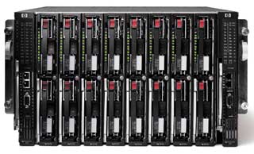
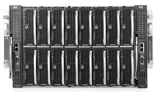
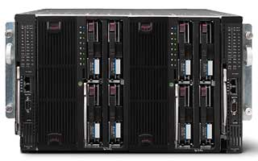

Сергей Ивановский
В последнее время аналитики отмечают появление все большего числа новых технологий, внедрение которых в готовые продукты — ПК, серверы, системы хранения данных (СХД) и сети — способно в ближайшие годы коренным образом изменить облик информационных систем, превращая разрозненные корпоративные системы и центры обработки данных в единую, динамически перестраиваемую в соответствии с потребностями ИТ-инфраструктуру.
Аналитики подчеркивают возрастающую роль серверов в такой ИТ-инфраструктуре, поскольку как в малых и средних компаниях, так и в крупных корпорациях постоянно, в соответствии с изменениями внешней среды и появлением новых бизнес-процессов, возникает потребность в решении новых прикладных задач, реализуемых на серверах. Достаточно назвать лишь борьбу с распространением вирусов, внешними атаками, спамом, защиту от нерегламентированного доступа к корпоративным ресурсам, что требует установки новых межсетевых экранов, систем шифрования данных, служб каталогов, четко регламентирующих доступ к информационным ресурсам. Растет при этом и нагрузка на локальные сети предприятий, которые становятся все сложнее.
Что особенно важно, в этих условиях при увеличении сложности самой ИТ-инфраструктуры снижается как ее собственная эффективность — в общем-то ограниченные ресурсы серверов используются для решения все большего числа прикладных задач, — так и эффективность управления всем комплексом серверов, поскольку возникающие спонтанно пиковые нагрузки усложняют перераспределение их вычислительных ресурсов. В результате приходится приобретать новые серверы для решения отдельных задач, что, как правило, приводит к новым проблемам совместимости и взаимодействия отдельных систем в ИТ-инфраструктуре.
При выполнении всех этих требований следует учитывать и еще одно условие: «гладкое», «бесшовное» взаимодействие всех подразделений предприятия между собой, а также с партнерами и клиентами. Поэтому руководителям компаний стоило бы обратить внимание на некоторые нетрадиционные предложения ИТ-менеджеров, нацеленные на совершенствование ИТ-инфраструктуры и комплекса серверов. В частности, таким нетрадиционным предложением представляется внедрение в ИТ-инфраструктуру блейд-серверов (сверхтонких серверов), которые уже активно используются многими зарубежными компаниями, как из сегмента среднего и малого бизнеса, так и крупными корпорациями.
ИТ-инфраструктура — проблемы построения и управления
В информационных системах организаций среднего и малого бизнеса, как правило, используются обычные серверы башенного конструктива, каждый из которых приобретался для решения конкретных задач. Таким образом парк серверов постепенно разрастался, образуя конгломерат устройств разнообразных марок, моделей и характеристик. Различие используемых в них интерфейсов, зачастую устаревших, запутанное кабельное хозяйство, разрозненные программно-аппаратные средства управления ими создают большие проблемы для мониторинга состояния серверов и их важнейших компонентов (процессоров, дисковых подсистем, памяти), выявления отказавших блоков, перераспределения ресурсов серверов для решения новых задач.
Не лучше обстоят дела в отделениях и филиалах крупных компаний. В крупных центрах обработки данных системный администратор, решив одну проблему, в результате может получить новые. Например, если для экономии пространства приобретаются небольшие серверы для установки в стойки, порой приходится жертвовать производительностью, доступностью и управляемостью (не говоря уж об увеличении числа кабелей). В большинстве случаев это следствие того, что решения о покупке нового оборудования принимаются исходя из минимизации единовременных затрат, без учета последующих немалых затрат на эксплуатацию.
После приобретения очередного сервера системный администратор вынужден тратить время на поиски драйверов и утилит, необходимых для установки этого сервера в той среде, которая используется в центре обработки данных, а затем еще выделить от половины до двух дней, чтобы его установить и настроить.
Задача дополнительно усложняется, когда необходимо обеспечить работу сервера в сети СХД. В этом случае системный администратор должен вручную сконфигурировать систему хранения, вручную ввести представление логического тома на сервере, записать все образы, которые требуются серверу, в его логических томах, и лишь после этого запустить приложение. При этом требуется вручную обеспечить взаимодействие трех интерфейсов управления: сервером, устройством хранения данных и сетью. Параллельно системному администратору приходится решать массу мелких проблем, связанных с доступом к данным и распределением ресурсов между пользователями, устранять конфликты в сети и т. д.
Согласно результатам специально проведенного исследования Gartner Group, до 90% времени персонала ИТ-отдела предприятия тратится на непрерывное обслуживание и устранение мелких, повседневных проблем, а задачи планирования развития и оптимизации всей ИТ-инфраструктуры для решения вновь возникающих бизнес-задач отходят на второй план. Подобную ситуацию кратко, но наглядно обрисовал системный администратор центра обработки данных одной из российских компаний: «Хотелось бы однажды сесть, обдумать заново всю структуру центра и переделать ее, чтобы не возникало локальных проблем, но такое «однажды» не наступает уже четвертый год — для этого нет времени».
В конечном счете в результате перегруженности ИТ-отделов «текучкой» и невозможности выстроить «правильную» ИТ-инфраструктуру страдает основной бизнес предприятия, которое не получает требуемого качества обработки информации, а порой лишается и необходимой доступности и безопасности данных.
Основные постулаты развития ИТ-инфраструктуры
В исследованиях аналитиков сегодня отмечается появление новой тенденции — изменения форм представления информационного содержания и процессов его обработки, когда контент последовательно проходит путь от статического физического состояния до цифровой мобильной и виртуальной формы.
Такому преобразованию контента в немалой степени способствует расширение возможностей сетевой инфраструктуры, что повышает производительность решений и обеспечивает возможность масштабирования платформ при максимальном использовании функциональности локальных сетей Ethernet за счет консолидации портов, конвергенции, централизации управления. В результате возникает более эффективная сеть, где управление потоками данных все в большей степени возлагается на сетевые коммутаторы и адаптеры, освобождая ресурсы процессоров и памяти серверов, что повышает общий уровень производительности решения.
Новые задачи требуют более простой, стандартизованной ИТ-инфраструктуры с более высокой степенью управляемости и адаптируемости входящих в нее систем. Процессы в ИТ-инфраструктуре должны легко тестироваться, измеряться и контролироваться (мониторинг и измерение), а для их изменения должны существовать удобные и простые средства управления (управление и изменение).
Сформулируем основные положения, исходя из которых должна строиться современная ИТ-инфраструктура.
1. Окружающий мир непрерывно меняется, и усиливающаяся конкуренция, сокращение свободных ресурсов и расширение запросов клиентов требуют, чтобы ИТ-отделы предприятия обеспечивали более высокую динамичность бизнеса компании.
2. Возникновение новых бизнес-приоритетов, появление новых партнеров и клиентов приводят к непрерывной перестройке и модернизации бизнес-процессов, что порождает новые запросы и потребности в обработке и хранении данных.
3. ИТ-инфраструктура должна обеспечивать надежную защиту и безопасность корпоративных данных и всестороннюю обработку возрастающего потока информации в соответствии с потребностями меняющихся бизнес-процессов. Изменения последних требуют постоянной подстройки ИТ-инфраструктуры и динамического изменения ее конфигурации.
4. Перестройка ИТ-инфраструктуры должна не только учитывать бизнес-потребности сегодняшнего дня, но и обеспечивать эффективное развитие в будущем, не требующее коренных изменений состава аппаратных и программных средств.
5. Все изменения в ИТ-инфраструктуре должны планироваться и осуществляться исходя не столько из требований минимизации инвестиций, сколько, что гораздо важнее, из требований более высокой эффективности и качества обработки информации, а также максимальной экономии затрат на содержание и обслуживание ИТ-инфраструктуры.
К сожалению, среди российских компаний не принято оценивать возможности развития своих информационных систем, ориентируясь на снижение совокупной стоимости владения, включающей не только разовые, но и эксплуатационные затраты.
Таким образом, ключевые требования к современной ИТ-инфраструктуре можно сформулировать следующим образом: она должна быть экономичной и обеспечивать высокую доступность, высокий уровень надежности и защиту от сбоев, возможность масштабирования в зависимости от изменяющейся нагрузки, высокую производительность отдельных подсистем, исключая появление узких мест, легкость в управлении, конфигурировании и наращивании ресурсов.
Именно в свете этих требований представляется перспективным внедрение в ИТ-инфраструктуру блейд-серверов Hewlett-Packard cерии ProLiant BL, поскольку они обеспечивают ИТ-отделам более широкие возможности управления и быстрой подстройки ресурсов информационной системы под текущие потребности бизнес-процессов.
Блейд-серверы предназначены для выполнения широкого круга задач, таких, как организация файловых серверов, межсетевых экранов, серверов виртуальных частных сетей, почтовых и Web-серверов, а также обработка баз данных и решение критически важных задач предприятия. Стоит напомнить, что сегодня аналитики IDC оценивают сегмент блейд-серверов как наиболее активно развивающийся сегмент мирового серверного рынка. По мнению экспертов, блейд-серверы представляют собой будущее традиционных серверных технологий, используя которые, компании смогут более гибко управлять работой своих информационных систем, упростить внесение изменений в их работу, существенно сокращая собственные издержки на ИТ-инфраструктуру.
Блейд-серверы как инструмент преобразования ИТ-инфраструктуры
Преимущество блейд-серверов Hewlett-Packard cерии ProLiant BL связано с тем, что они созданы на базе стандартной архитектуры Intel х86 и используют компоненты, отвечающие отраслевым стандартам. Это гарантирует высокую совокупную надежность инфраструктуры, бесперебойный доступ к данным и полную совместимость с другими серверами той же архитектуры. Блейд-серверы НР ProLiant BL работают во всех наиболее популярных средах — Microsoft Windows, Novell и ряде версий Linux.
Все модели ProLiant BL оптимизированы по плотности размещения и удобству развертывания с использованием индустриальных стандартов в области сетевых технологий и сетей хранения (таких, как IP и Fibre Channel), а также в области администрирования (SNMP и IPMI).
В конструкции всех моделей блейд-серверов НР использованы современные технологические решения, что обеспечивает им высокую вычислительную производительность и быстрый отклик сервера, большую емкость и быстродействие дисковых подсистем, возможность подключения к скоростным локальным сетям по стандарту Gigabit Ethernet.
Встраиваемые в общий корпус блейд-серверов (полку) сетевые коммутаторы позволяют организовать взаимодействие между отдельными блейд-серверами без применения кабелей, что максимально сокращает объем и масштабы кабельного хозяйства и упрощает установку и эксплуатацию устройств. Уменьшенное более чем на 80% кабельное хозяйство полок с блейд-серверами НР ProLiant BL позволяет получить экономию в 100—350 долл. на каждый сетевой порт. Интегрированная сетевая инфраструктура ProLiant BL (встроенные в объединительную панель коммутаторы Ethernet с выводом наружу портов Fibre Channel в режиме патч-панели и средствами резервирования соединений) обеспечивает их более высокую доступность.
Стоит также отметить, что внутренняя сетевая инфраструктура блейд-серверов ProLiant BL в совокупности с интегрированными в них процессорами удаленного управления Integrated Lights-Out (iLO) устраняет потребность в коммутаторах и кабелях KVM, что дает экономию до 25 тыс. долл. на стойку.
Эффективность применения блейд-серверов ProLiant BL выше, чем башенных и стоечных серверов, и достигается это за счет:
- возможности быстрого переноса ресурсов с одного блейд-сервера на другой;
- возможности переноса ресурсов при сбое на резервные серверы;
- динамической реконфигурации ресурсов.
Поэтому применение блейд-серверов позволяет построить более экономичную серверную ферму повышенной готовности за счет встроенных средств резервирования N+1. Такая конструкция исключает необходимость в двойном резервировании и избыточности 1+1, а следовательно, снижает единовременные затраты почти на 100% при достаточном уровне отказоустойчивости системы. Кроме того, автоматизированные средства управления переназначением серверов и перераспределения нагрузки сокращают до минимума время простоев при отказе одного из серверов, а также возможные аппаратные и программные ошибки.
Если в рамках ИТ-инфраструктуры необходима высокопроизводительная и надежная подсистема обработки данных, на основе блейд-серверов ProLiant BL можно создать вычислительные кластеры и вычислительные сети, например, сертифицированные кластеры реляционных баз данных (Oracle9i RAC и 10g).
Чтобы обеспечить максимальную открытость архитектуры своих блейд-серверов, Hewlett-Packard реализовала программу обеспечения совместимости с ПО и аппаратурой других производителей — HP Blade-Server Alliance Program. Поэтому все поставляемые серверы ProLiant BL обеспечивают подключение систем хранения в архитектуре SAN и/или NAS от разных производителей, что отвечает современной концепции построения ИТ-инфраструктуры с консолидированными ресурсами хранения и обработки информации.
Кроме того, блейд-серверы ProLiant BL специальным образом оптимизированы, что обеспечивает их быструю, в течение нескольких минут, установку и минимум простоев. Благодаря этому существенно сокращаются затраты на развертывание, обслуживание комплекса серверов и управление им. Hewlett-Packard поставляет в комплекте с ProLiant BL полный набор средств управления, основанный на технологиях дистанционного управления Integrated Lights-Out (iLO) и программных средствах НР ProLiant Essentials Foundation Pack с Systems Insight Manager. Эксперты высоко оценивают блейд-серверы НР именно с точки зрения их управляемости.
Вот неполный перечень использованных в серверах ProLiant BL технологий и функций, предназначенных для их быстрого и простого обслуживания и управления ими:
- интегрированные серверные агенты Insight Manager и средства удаленного управления iLO — обеспечивают защищенный доступ и управление из любой точки информационной системы;
- набор инструментов управления, включая автоматизированные, интеллектуальные продукты семейства Proliant Essentials, — помогают быстро запустить серверы в эксплуатацию, поддерживать доступность и предотвращать проблемы до их возникновения;
- удобная горячая замена компонентов;
- агрегирование сетевых интерфейсов для отказоустойчивости или балансировки нагрузки;
- совместимость с СХД разных производителей.
Внедряя блейд-серверы НР ProLiant BL, за счет сверхплотной компоновки предприятия могут получить значительную экономию (до 25%) пространства в центрах обработки данных и серверных комнатах.
Система разводки питания блейд-серверов НР ProLiant BL обеспечивает избыточность N+N, удобный доступ и устраняет потребность в источниках питания в каждом отдельном сервере, что снижает энергопотребление и тепловыделение. За счет этого удается сократить расходы на электроэнергию и затраты на кондиционирование и охлаждение воздуха на сумму до 6 тыс. долл. в расчете на одну серверную стойку.
Все сказанное выше позволяет сделать вывод, что блейд-серверы можно рассматривать как базовый продукт, который позволит сделать первый шаг к эволюционному преобразованию ИТ-инфраструктуры предприятия, изменить условия работы, организацию управления и обслуживания серверов, более эффективно проводить администрирование серверных сред за счет консолидации и централизации мониторинга, управления отдельными блейд-серверами и перераспределением их ресурсов в зависимости от бизнес-задач предприятия. В то же время, применяя блейд-серверы НР ProLiant BL, системные администраторы в состоянии обслуживать вдвое большее число серверов по сравнению с традиционными стоечными серверами.
При этом Hewlett-Packard подчеркивает, что, несмотря на инновационный характер НР ProLiant BL, внедрение этих серверов не потребует кардинальной перестройки всей информационной системы. Предприятие может по-прежнему использовать все наработанное и наследуемое ПО, а совместимость НР ProLiant BL с другими серверами стандартной архитектуры Intel х86 и СХД служит гарантией от появления дополнительных проблем.
Как свидетельствует статистика, множество компаний в Европе уже использует блейд-серверы Hewlett-Packard для горизонтального масштабирования своих систем и организации работы самых различных их компонентов, начиная от межсетевых экранов, почтовых серверов и вычислительных систем на границах сетей и кончая подсистемами обработки больших баз данных масштаба предприятия и исполнения критически важных приложений.
Семейство НР ProLiant BL
Hewlett-Packard стала первым в мире крупным производителем блейд-серверов и в настоящее время поставляет широкий спектр этих устройств (cерия НР ProLiant BL) двух классов — однопроцессорные системы е-класса и двух- и четырехпроцессорные системы р-класса.
Первый, е-класс представлен единственной моделью — однопроцессорным НР ProLiant BL10e G2 на базе процессора Intel Pentium M частотой 1 ГГц с кэшем 2-го уровня объемом 1 Мбайт. В сервере используется набор микросхем ServerWorks GC-SL 3.0, позволяющий установить до 1 Гбайт памяти ECC DDR SDRAM, 2,5-дюйм жесткий диск с интерфейсом Ultra ATA емкостью 40 Гбайт и два интегрированных сетевых контроллера NC3163 Fast Ethernet 10/100 с функцией PXE.
В специальную полку высотой 3U можно установить одновременно до 20 блейд-серверов НР ProLiant BL10e G2. В полке продублированы блоки питания и вентиляторы (все с возможностью горячей замены). Для взаимодействия серверов с сетью предусмотрены три варианта коммутационных подключений: через коммутатор HP ProLiant BL e-Class C-GbE с резервированием подключений и 4-Гбит Uplink-портами, что позволяет сократить число кабелей для 20 блейд-серверов с 40 до 1; либо через одну из двух типов патч-панели HP ProLiant BL e-Class RJ-45 или HP ProLiant BL e-Class RJ-21, которая обеспечивает связь с Ethernet-контроллером сетевых адаптеров серверов через 40 отдельных коннекторов RJ-45 или консолидированные группы из четырех коннекторов RJ-21.
Модель НР ProLiant BL10e G2 предназначена для работы серверных приложений: систем распределения входной нагрузки, брандмауэров, систем электронной почты и шифрования.
В р-классе Hewlett-Packard выпускает две разновидности двухпроцессорных блейд-серверов: HP ProLiant BL20p G3 и недавно анонсированный HP ProLiant BL30p, имеющий самую высокую плотность в своем классе.
Одновременно с выпуском второго блейд-сервера Hewlett-Packard анонсировала выпуск нового универсального корпуса — полки с обновленным дизайном, предусматривающим агрегирование портов удаленного управления iLO, и с полной обратной совместимостью, что позволяет устанавливать в нее как двух-, так и четырехпроцессорные блейд-серверы HP ProLiant BL p-класса всех поколений в различных сочетаниях.
HP ProLiant BL20p G3 создан на базе процессоров Intel Xeon 3,6 ГГц (ядро Nocona) и НМС Intel 7520 (Lindenhurst), обеспечивающего установку до 8 Гбайт памяти DDRII PC2-3200 ЕСС. Он имеет три стандартных адаптера Gigabit Ethernet плюс один адаптер 10/100 Ethernet для дистанционного управления через интегрированную микросхему iLO. При необходимости сервер можно дополнить платой Fibre Channel mezzanine для подключения к сети SAN. Два универсальных заменяемых в горячем режиме жестких SCSI-диска обеспечивают емкость до 292 Гбайт, а встроенный RAID-контроллер Smart Array 6i реализует производительность Ultra320 и в качестве опции оборудуется дополнительным кэш-буфером записи 128 Мбайт с защитой аккумулятором.
|  | Полка с серверами HP ProLiant BL20p G3.
|
HP ProLiant BL30p — это наиболее компактный двухпроцессорный блейд-сервер третьего поколения, построенный на базе процессоров Intel Xeon 3,2 ГГц с кэшем емкостью 2 Мбайт и системной шиной с частотой 533 МГц. В сервер можно установить два модуля памяти общим объемом 4 Гбайт с технологией чередования (Flex Memory) и два жестких диска емкостью 40—60 Гбайт с интерфейсом ATA. Предусмотрены два сетевых интерфейса Gigabit Ethernet плюс один адаптер 10/100 Ethernet для дистанционного управления через интегрированную микросхему iLO. С помощью платы Fibre Channel mezzanine сервер подключается к SAN через два порта FC. Серверы HP ProLiant BL30p полностью совместимы с уже имеющейся инфраструктурой серверов BL p-класса. Это означает, что установка в существующие системы новых моделей серверов не потребует никаких изменений в системах питания, охлаждения, управления или межсерверных соединениях.
|  | Компактные двухпроцессорные серверы HP ProLiant BL30p в полке.
|
В корпус высотой 6U (10,5 дюйм) помещается 16 блейд-серверов. Таким образом, общее число процессоров в стойке стандартного размера, целиком заполненной серверами HP ProLiant BL30p, может достигать 192.
Блейд-серверы HP ProLiant BL20p G3 и BL30p подходят для динамического Web-хостинга, систем электронной коммерции, работы с потоковым медиа, создания серверов приложений, вычислительных кластеров и вычислительных сетей. Они созданы с учетом оптимизации вычислительной мощности при минимальном объеме локальных средств хранения данных либо при полном их отсутствии. При необходимости к серверам HP ProLiant BL30p можно подключить двухпортовые адаптеры Fibre Channel, что позволит применять эти серверы для создания сетей SAN и кластеров, а также подключить их по интерфейсу Fibre Channel к имеющимся SAN, построенным на основе оборудования от HP и некоторых сторонних производителей. Благодаря конвергенции SAN и NAS в ИТ-инфраструктуре, создаваемой на базе HP ProLiant BL20p и HP ProLiant BL30p, можно интегрировать приложения баз данных и функции файл-серверов.
Наиболее мощный представитель блейд-серверов р-класса — четырехпроцессорный сервер HP ProLiant BL40p. В нем используются до четырех процессоров Intel Хеоn МР с частотой до 3,0 ГГц и кэшем 3-го уровня объемом до 4 Мбайт; частота системной шины — 400 МГц. Шесть слотов позволяют установить до 12 Гбайт памяти DDR РС1600 ЕСС, а интегрированный контроллер RAID SmartArray 5i Plus обеспечивает защиту всех данных, хранящихся на дисках блейд-сервера. Его два слота PCI-X, оптимизированные для использования FC-адаптеров HP StorageWorks и поддерживающие SAN-массивы других фирм, обеспечивают резервированное подключение. В HP ProLiant BL40p устанавливается до четырех универсальных жестких дисков с интерфейсом SCSI и с возможностью горячей замены общей емкостью до 288 Гбайт.
|  | Полка с четырехпроцессорными HP ProLiant BL40p.
|
Блейд-серверы HP ProLiant BL40p ориентированы на обработку средних и крупных корпоративных баз данных, создания вычислительных отказоустойчивых кластеров, серверов приложений, обеспечивающих работу систем ERP, CRM, хранилищ данных, контроллеров доменов, систем электронного бизнеса.
Расширенные функции управления
Поставляемый вместе с блейд-серверами НР ProLiant BL комплекс программ НР ProLiant Essentials Foundation Pack в совокупности с Systems Insight Manager обеспечивает полный комплекс функций для мониторинга и управления этими устройствами.
Для первоначального запуска ProLiant BL служит универсальный инструмент — пакет SmartStart, поставляемый вместе с серверами на CD. Этот пакет можно запустить с ноутбука, подключенного к блейд-серверу через специальный (входящий в комплект) SUVI-кабель, который дает доступ с передней панели к порту iLO, видеовходу, USB-клавиатуре и мыши. Этот пакет имеет простой, удобный интерфейс и позволяет сконфигурировать коммутатор, порты iLO, обновить BIOS блейд-сервера через Wizard, установить ОС и подключить сервер к существующей сети и к программным средствам управления (Systems Insight Manager, RDP и т. д.).
Если установить одиночный сервер можно вручную с помощью пакета SmartStart, то поставляемый по требованию пакет HP ProLiant Essentials Rapid Deployment Pack обеспечивает быстрое централизованное развертывание мультисерверной инфраструктуры, включая настройку аппаратной части блейд-серверов, установку ОС и всех необходимых приложений. Для этого создается образ сконфигурированного для решения определенных задач сервера, его ОС и приложений, а затем с помощью скриптов пакет Rapid Deployment Pack выполняет массовую установку блейд-серверов. При этом не требуется никаких дискет и CD, системному администратору не нужно физически находиться рядом со стойкой с блейд-серверами, коммутировать кабели. На консоли развертывания администратор выбирает из хранимых в сети требуемые образы и способом drag and drop переносит их на визуальное отображение того или иного сервера или группы серверов, после чего на них начинается автоматическая инсталляция ОС и приложений.
Для управления блейд-серверами HP ProLiant BL служит система Systems Insight Manager, которая, используя данные от установленных на серверы Insight-агентов, обеспечивает представление всех физических ресурсов серверов, включая детальное представление их отказов и информацию об их производительности.
Применяемая в HP ProLiant BL интегрированная система удаленного управления блейд-серверами Integrated Lights-out Advanced обеспечивает виртуальное присутствие и контроль, управление и мониторинг с визуализацией состояния блейд-серверов. Технология iLO Advanced формирует графическую удаленную консоль, с помощью которой системный администратор имеет полный доступ к аппаратной консоли сервера, а также обеспечивает удобное дистанционное управление виртуальными носителями данных, сокращая затраты времени на развертывание и обслуживание программных систем.
На основе информации от установленных на серверы Insight-агентов пакет Systems Insight Manager дает системному администратору визуальное представление и возможности интеллектуального управления всеми установленными серверами HP ProLiant BL в любой точке ИТ-инфраструктуры. Systems Insight Manager ассоциирует каждый блейд-сервер с его системой iLO, выводит графическое представление стойки и полок с показом положения каждого сервера на полке и статуса всех установленных серверов.
Используя данные Insight-агентов, Systems Insight Manager может также выводить детальную информацию о состоянии компонентов блейд-сервера — процессора, памяти, жестких дисков, сети, PCI-слотов и установленных в них адаптеров, а также температурный режим внутри сервера и условия работы вентиляторов. Обнаружив отклонение от нормальных режимов работы компонента отдельного сервера, Systems Insight Manager отправляет системному администратору сообщение по электронной почте и по сети о возникших неисправностях компонентов и создает полные отчеты о работе всех блейд-серверов. В случае обнаружения сбоев администратор в удаленном режиме через консоль Systems Insight Manager может выполнить сброс питания и перезапуск блейд-сервера.
Совместное применение пакетов Rapid Deployment Pack и Systems Insight Manager дает системному администратору возможность автоматического восстановления серверной системы. Для этого в составе блейд-серверов на отдельной полке назначаются один или два резервных сервера. Если Systems Insight Manager обнаруживает сбой одного из «рабочих» серверов, то с помощью исполняемого BAT-файла запускается Rapid Deployment Pack, который отключает сбойный блейд-сервер и загружает идентичный образ на резервный сервер, включающийся в работу. В подобной схеме может существовать несколько резервных серверов, она также может строиться с учетом решений для балансировки нагрузки и подключений к SAN.
Еще заметнее упрощается восстановление серверной системы после сбоя, если она подключена к SAN. При обнаружении сбоя автоматически вызывается BAT-файл, списки контроля доступа к SAN модифицируются, отказавший блейд-сервер выключается, а резервный включается, подключается к SAN и берет на себя функции сбойного сервера.
Таким образом, средства управления серверами семейства HP ProLiant BL, такие, как Systems Insight Manager и приобретаемые отдельно программные компоненты ProLiant Essentials, например, Rapid Deployment Pack, позволяют повысить уровень готовности серверов и сократить затраты времени и ресурсов на их администрирование и обслуживание. К настоящему времени реализовано уже более 500 тысяч лицензий на программные пакеты ProLiant Essentials.
Вместо заключения
НР ProLiant BL10e стали первыми на мировом рынке промышленно выпускаемыми блейд-серверами, а HP ProLiant BL40p — первыми четырехпроцессорными системами подобного класса. За четыре года поставок и обслуживания таких серверов Hewlett-Packard накопила большой опыт проектирования и производства современных блейд-систем, который нашел свое воплощение в объявленных в апреле этого года HP ProLiant BL30p, блейд-серверах особо высокой плотности. Стоит также отметить, что Hewlett-Packard поставляет все устройства НР ProLiant BL с различными вариантами коммутации, что дает клиентам возможность выбирать оптимальные для их ИТ-инфраструктуры решения.
В ближайшее время Hewlett-Packard планирует выпуск новых моделей подобных ультраплотных систем на базе высокопроизводительных процессоров AMD Opteron. В частности, во второй половине этого года компания предполагает выпустить двухпроцессорный блейд-сервер особо высокой плотности на основе AMD Opteron, тем самым еще более расширяя свое предложение в этом быстро развивающемся сегменте серверного рынка.